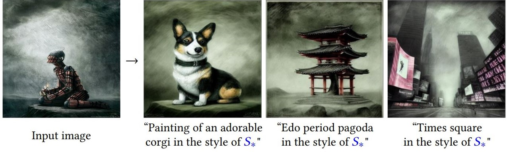

Text-to-image personalization aims to teach a pre-trained diffusion model to reason about novel, user provided concepts, embedding them into new scenes guided by natural language prompts. However, current personalization approaches struggle with lengthy training times, high storage requirements or loss of identity. To overcome these limitations, we propose an encoder-based domain-tuning approach. Our key insight is that by underfitting on a large set of concepts from a given domain, we can improve generalization and create a model that is more amenable to quickly adding novel concepts from the same domain. Specifically, we employ two components: First, an encoder that takes as an input a single image of a target concept from a given domain, e.g., a specific face, and learns to map it into a word-embedding representing the concept. Second, a set of regularized weight-offsets for the text-to-image model that learn how to effectively injest additional concepts. Together, these components are used to guide the learning of unseen concepts, allowing us to personalize a model using only a single image and as few as 5 training steps --- accelerating personalization from dozens of minutes to seconds, while preserving quality.
We propose a two-component method for fast personalization of text-to-image diffusion models. First, a domain-specific encoder that learns to quickly map images into word-embeddings that represent them. Two, a set of weight-offsets that draw the diffusion model towards the same domain, allowing for easier personalization to novel concepts from this domain. We pre-train these components on a large dataset from the given domain. At inference time, we can use them to guide optimization for a specific concept, for example our own pet cat.
The result is a tuning-approach that requires as few as 5 training steps in order to personalize the diffusion model, reducing optimization times from dozens of minutes to a few seconds. This puts personalization times in-line with the time it takes to generate a batch of images, eliminating the need to save a model for every new concept.
Comparisons with prior personalization methods. We show (left to right): An image of a researcher used for 1-shot personalization, the result of prompting Stable Diffusion with the researcher's name, the results of personalization with Textual Inversion and DreamBooth* using 1- and 5-images respectively, the results of training a DreamBooth model and an embedding concurrently on 5 images, and finally our own result and the driving prompt. Our method achieves comparable or better quality with only a single image and a fraction of the time.
*We use the HuggingFace implementation which follows the paper and tunes only the U-Net.
Our approach works for non-facial domains, and even extends to abstract concepts like artistic styles. Here, we show results with encoders trained on WikiArt (left) and LSUN-Cat (right) respectively.
Image credits: QinniArt, David Revoy, Jeanie
The encoders learn to generalize from large datasets that represent the coarse target class. As such, they are only applicable for classes where large datasets exist. We show the effects of trying to personalize out-of-domain images using our method. When the concepts are from nearby domains (dogs, inverted with a model trained on cats), the method can still produce high-fidelity results. For farther domains (a wooden toy) the method fails to capture concept-specific details.
The method also significantly increases VRAM requirements. In order to perform inference-time tuning, the same machine used for generation should be powerful enough to tune the model. Moreover, as the encoder and text-to-image models must be tuned in tandem, this process requires more memory than direct fine-tuning approaches.